Конкурси · журнал «ДентАрт» 2023 №1
XXIV Всеукраїнський професійний конкурс лікарів-стоматологів «Шлях у світ майстерності»
XXIV All-Ukrainian professional competition of dentists «The way to the world of mastery»
Конкурси лікарської майстерності — це не тільки платформа для обміну досвідом та знаннями між стоматологами, викладачами вищої освіти, вони дозволяють покращити якість медичної допомоги, оновити знання та навички лікарів, вдосконалити методи лікування і підвищити його ефективність. Конкурси лікарської майстерності можуть також збільшити зацікавленість у медичній професії та підвищити престиж професії стоматолога.
Якісна стоматологічна допомога можлива при визначенні чітких показників, що дозволяють робити якісну оцінку результатів лікування. Вони оновлюються і формулюються під час проведення професійних конкурсів лікарів та інтернів, які дозволяють випробувати різні підходи до експертизи якості за короткий час і навчити їх усіх учасників журі. При оцінюванні спостерігається перехід від вимірювання компетенції лікарів до вимірювання результатів реставрації, а відкритість при висвітленні конкурсу в соціальних мережах і пресі дає можливість інтеграції цих критеріїв у повсякденну роботу всіх спеціалістів.1
В екстремальних умовах, з якими зіткнулася наша країна, організатори конкурсу «Шлях у світ майстерності», що традиційно організовується кафедрою післядипломної освіти лікарів-стоматологів Полтавського державного медичного університету на базі клініки «Професорська стоматологія», враховували наявність належного оснащення та устаткування з необхідним обладнанням (генератори та ін.) для надання кваліфікованої стоматологічної допомоги.
Цілі й завдання конкурсу
- популяризація та впровадження у практику лікарів-стоматологів сучасних технологій, приладів і якісних пломбувальних матеріалів;
- демонстрація стандарту якості роботи лікаря-стоматолога у реставраційній техніці;
- оновлення, формулювання і визначення чітких критеріїв якості реставрації з урахуванням новітньої інструментальної та матеріальної бази;
- інформування населення про можливості якісного лікування.
Відновлення твердих тканин зубів можна вважати цілком успішним лише в тому разі, якщо його результати відповідають усім сучасним вимогам, а також індивідуальним запитам та очікуванням пацієнта. Це означає, що характеристики відновлених твердих тканин зубів повинні забезпечувати одночасно анатомічну, функціональну, естетичну та повну психологічну реабілітацію пацієнта. Для оцінки якості робіт використовували критерії, що їх розробив Сергій Радлінський для Призма-чемпіонату.2
Критерії оцінки якості реставрацій
| Параметри | Способи оцінки |
|---|---|
| Загальний вигляд і пропорції | Візуальний, вимірювання в різних напрямках штангенциркулем |
| Підбір відтінків і моделювання переходів кольору | Візуальне порівняння з натуральними зубами при яскравому освітленні і темним фоном |
| Прозорість ріжучого краю і проксимальних поверхонь | Візуальне порівняння у прохідному і відбитому світлі різного спрямування |
| Тіло зуба | Візуальне порівняння з освітленням і без освітлення |
| Шийка зуба | Візуальне порівняння у променях полімеризаційної лампи |
| Крайове прилягання | Зондування ясенної борозни, перевірка флосами, рентгенівський знімок |
| Рельєф і блиск поверхні | Візуальне порівняння з натуральними зубами у висушеному вигляді |
| Контактні пункти (цілісність, форма) | Перевірка лавсановою смужкою, візуальне визначення рівня контактної точки |
| Оклюзійні контакти | Перевірка артикуляційною фольгою і папером |
| Артистичність виконання | Візуальне порівняння у прохідному і відбитому світлі різних напрямків |
| Дотримання здоров'я пацієнта | Анамнез, оцінка технологічних етапів реставраційного процесу, тривалість роботи |
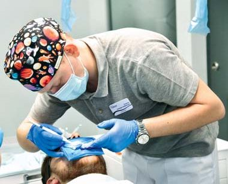
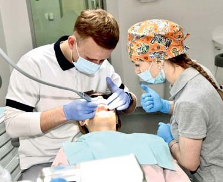
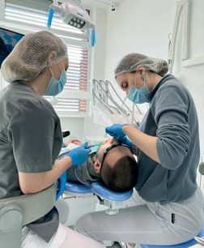
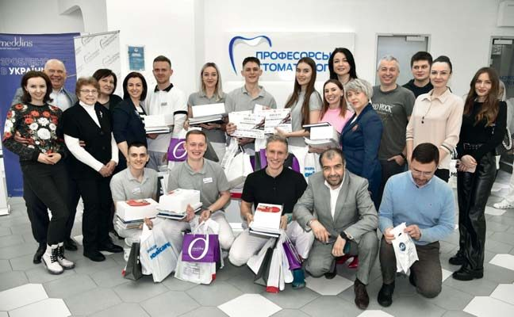
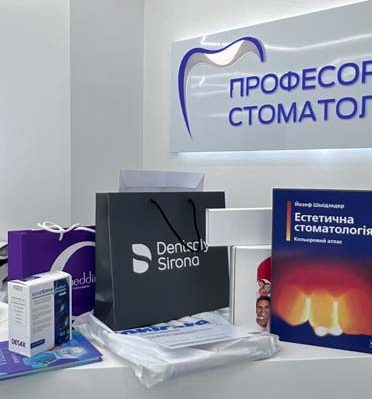
Етапи конкурсної роботи. Члени журі, організатори, учасники і спонсори.
Перебіг конкурсу
Тож перший тур конкурсу проводився в онлайн-форматі. За умовами конкурсу лікарі-інтерни повинні володіти технологією роботи із сучасними реставраційними матеріалами, уміти виконувати реставрації в зоні передніх зубів верхньої щелепи, лікувати неускладнений карієс. Інформацію надавали у вигляді презентацій, які висвітлювалися в рамках ХХІV Всеукраїнського навчального семінару «Шлях у світ майстерності», присвяченого актуальним питанням стоматології, що відбувся 9 лютого 2023 року на кафедрі післядипломної освіти лікарів-стоматологів.
Зі вступним словом і привітанням до учасників семінару виступив проректор закладу вищої освіти з науково-педагогічної роботи та післядипломної освіти професор Ігор Скрипник. Плідної роботи семінару побажав завідувач кафедри післядипломної освіти лікарів-стоматологів професор Петро Скрипников.
З доповідями виступили:
- Ксенія Лазарєва, асистент кафедри післядипломної освіти лікарів-стоматологів ПДМУ: «ХХІV Всеукраїнський професійний конкурс лікарів-стоматологів „Шлях у світ майстерності"», «Відновлення зубів після ендодонтичного лікування»;
- Наталія Синицина, лікар-стоматолог навчального центру «Аполлонія», м. Полтава: «Мистецтво краси — анатомія, функція, естетика»;
- Станіслав Геранін, кандидат медичних наук, головний лікар стоматологічного центру «Махаон», м. Полтава: «GOLDEN EXCELLENCE. Еволюція інструментації»;
- Олена Бережна, кандидат медичних наук, доцент кафедри післядипломної освіти лікарів-стоматологів ПДМУ: «Відновлення сильно зруйнованих зубів у дітей».
Закінчився семінар відкритою науковою дискусією, підбиттям підсумків конкурсу. У першому турі взяли участь 11 лікарів-інтернів із 9 міст України, які надали презентації своїх робіт:
- Валерія Анікіна, м. Павлоград, ПДМУ
- Андрій Адаменко, м. Херсон, ПДМУ
- Ольга Доценко, м. Краматорськ, ПДМУ
- Дмитро Клевець, м. Докучаєвськ, ПДМУ
- Кристина Костюк, м. Полтава, ПДМУ
- Ольга Кривда, м. Ватутіне, ПДМУ
- Роман Моторний, м. Карлівка, ПДМУ
- Валентин Пілат, м. Хмельницький, ВНМУ ім. М. І. Пирогова
- Ілля Прокопенко, м. Полтава, ПДМУ
- Омелян Рибак, м. Івано-Франківськ, ІФНМУ
- Валерія Скубій, м. Полтава, ПДМУ
Омелян Рибак (м. Івано-Франківськ) з Івано-Франківського національного медичного університету став переможцем онлайн-туру, а фіналісти змагалися 19 лютого 2023 року в клініці «Професорська стоматологія». За умовами конкурсу лікарям-стоматологам потрібно було виконати реставрацію двох каріозних порожнин ІІІ-IV класів за Блеком з використанням композитних фотополімерних матеріалів, працюючи з рабердамом. На виконання реставраційної роботи лікареві з асистентом було відведено 2,5-3 години. На кожному етапі конкурсу відбувається фотореєстрація, яка допомагає журі конкурсу визначити якісне втілення всіх нюансів реставрації. Конкурсний досвід дозволяє отримати важливі спостереження, проаналізувати помилки і труднощі, з якими стикаються лікарі-інтерни, сформувати чіткий алгоритм реставрації.
Стійкий гарантований результат можна отримати завдяки дотриманню протоколів реставрації, наполегливому тренуванню та аналітичному розумінню головних критеріїв зовнішнього вигляду природних тканин зуба. Важливим етапом, якому іноді конкурсанти не надають достатньо уваги, є самостійний контроль якості реставрації: візуальне порівняння у прохідному та відбитому світлі різних напрямків, зондування ясенного жолобка, перевірка флосами, контрольний рентгенівський знімок, перевірка лавсановою смужкою, візуальне визначення рівня контактної точки та конфігурації проксимальної поверхні, візуальне порівняння з природними зубами у висушеному вигляді для оцінки якості полірування. За результатами наших спостережень видно, що головними труднощами для лікарів-інтернів є етапи підбору кольору, препарування глибоких порожнин і побудови контактних пунктів.
Таким чином, професійні конкурси реставрації зубів, зокрема Всеукраїнський конкурс «Шлях у світ майстерності», що відбувається понад 20 років на базі кафедри післядипломної освіти лікарів-стоматологів УМСА, нині ПДМУ, дозволяють привернути увагу авдиторії інтернів і фахівців до проблеми якості реставрацій, продемонструвати, що стійкий гарантований результат можна отримати завдяки тренуванню та аналізу головних критеріїв зовнішнього вигляду природних тканин зуба. Адже кожна реставрація — це і репутація лікаря, який лише розпочинає свій професійний шлях, його певний професійний статус, і майбутня довіра пацієнтів. Конкурсний досвід дозволяє отримати портфоліо для подальшого успішного працевлаштування.
Крім того, конкурс — це чудова можливість для обміну досвідом і демонстрації найкращих практик виконання процедур з використанням сучасних матеріалів. Фотореєстрація допомагає журі конкурсу визначити якість виконання всіх нюансів реставрації. Оцінка відновлених зубів є досить суб'єктивною, оскільки одні й ті ж результати можуть зовсім по-різному сприйматися різними фахівцями. Буде незайвим також дізнатися відчуття і думку пацієнта як майбутнього користувача після завершення відновлення зубів, ця оцінка може бути суб'єктивною за формою, але об'єктивною по суті, поскільки зорове сприйняття реставраційної конструкції є вирішальним в оцінці її якості.
Лікар Роман Моторний, м. Карлівка, ПДМУ
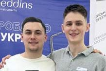
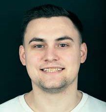
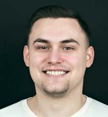
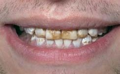
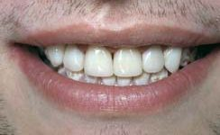
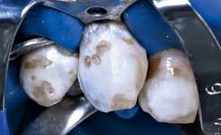
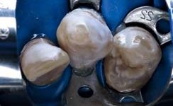
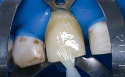
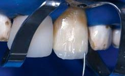
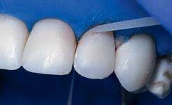
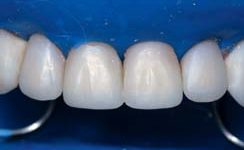
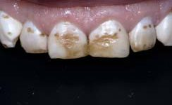
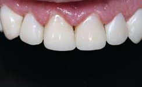
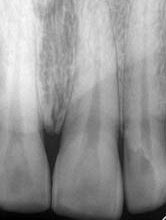
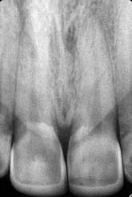
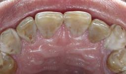
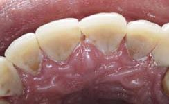
Лікар Роман Моторний, м. Карлівка, ПДМУ. Ліворуч — до реставрації, праворуч — після реставрації.
Лікар Кристина Костюк, м. Полтава, ПДМУ
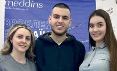
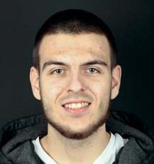
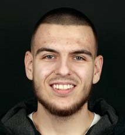
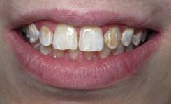
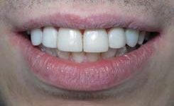
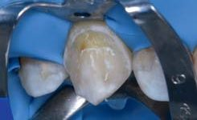
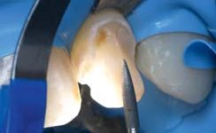
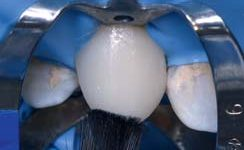
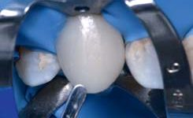
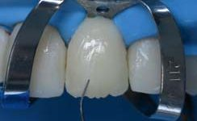
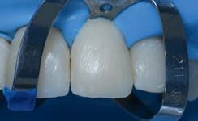
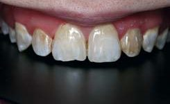
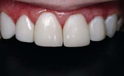
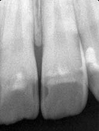
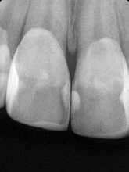
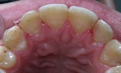
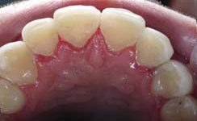
Лікар Кристина Костюк, м. Полтава, ПДМУ. Ліворуч — до реставрації, праворуч — після реставрації.
Лікар Валентин Пілат, м. Хмельницький, ВНМУ ім. М. І. Пирогова
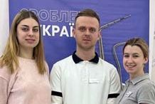
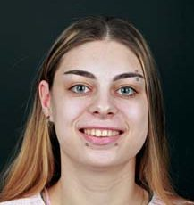
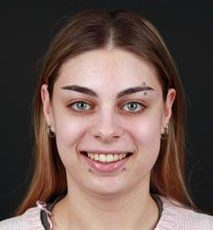
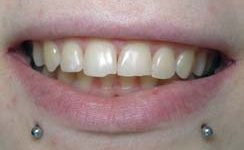
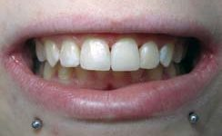
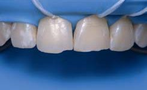
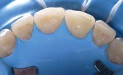
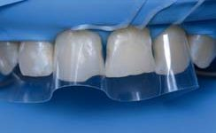
Лікар Валентин Пілат, м. Хмельницький, ВНМУ ім. М. І. Пирогова. Ліворуч — до реставрації, праворуч — після реставрації.
Лікар Дмитро Клевець, м. Докучаєвськ, ПДМУ
Лікар Дмитро Клевець, м. Докучаєвськ, ПДМУ. Ліворуч — до реставрації, праворуч — після реставрації.
Лікар Ольга Кривда, м. Ватутіне, ПДМУ
Лікар Ольга Кривда, м. Ватутіне, ПДМУ. Ліворуч — до реставрації, праворуч — після реставрації.
Лікар Андрій Адаменко, м. Херсон, ПДМУ
Лікар Андрій Адаменко, м. Херсон, ПДМУ. Ліворуч — до реставрації, праворуч — після реставрації.
Лікар Валерія Скубій, м. Полтава, ПДМУ
Лікар Валерія Скубій, м. Полтава, ПДМУ. Ліворуч — до реставрації, праворуч — після реставрації.
Лікар Ілля Прокопенко, м. Полтава, ПДМУ
Лікар Ілля Прокопенко, м. Полтава, ПДМУ. Ліворуч — до реставрації, праворуч — після реставрації.
Переможці
У другому турі взяли участь 8 лікарів-інтернів. Переможці другого туру:
- І місце — Кристина Костюк, м. Полтава, ПДМУ; Валентин Пілат, м. Хмельницький, ВНМУ ім. М. І. Пирогова.
- ІІ місце — Дмитро Клевець, м. Докучаєвськ, ПДМУ; Ольга Кривда, м. Ватутіне, ПДМУ.
- ІІI місце — Андрій Адаменко, м. Херсон, ПДМУ; Валерія Скубій, м. Полтава, ПДМУ; Ілля Прокопенко, м. Полтава, ПДМУ.
- Гран-прі та приз глядацьких симпатій — Роман Моторний, м. Карлівка, ПДМУ.
Учасники конкурсу отримали дипломи й цінні подарунки, сертифікати на навчання та придбання стоматологічної продукції від спонсорів, а це ПДМУ, Асоціація стоматологів України, клініка «Професорська стоматологія», міжнародний стоматологічний журнал «ДентАрт», фірми Meddins, Phillips, Dentsply Sirona, HagerWerken, Endopen, MDS, Colgate, Навичка, Артап, Роял інтеграція. На сайті кафедри післядипломної освіти лікарів-стоматологів www.dentaero.com були висвітлені етапи конкурсу і відбулося інтернет-голосування за кращу роботу, в якому приз глядацьких симпатій і отримав Роман Моторний.
Вітаємо переможців з високими результатами робіт і нагородами! Нових професійних здобутків і успішного кар'єрного зростання!
Валентин Пілат і Кристина Костюк — перше місце. Нагородження конкурсантів. Ольга Кривда — друге місце. Дмитро Клевець — друге місце. Андрій Адаменко — третє місце. Валерія Скубій — третє місце. Ілля Прокопенко — третє місце. Володар Гран-прі Роман Моторний. Фото Кристини Костюк.
Література
- Скрипников П. М., Скрипникова Т. П., Хміль Т. А., Лазарєва К. А., Бережна О. Е. Експертиза якості прямих реставрацій передніх зубів в рамках конкурсу лікарів-інтернів // Проблеми безперервної медичної освіти та науки. — 2021. — № 1.
- Лазарєва К. А. Біоміметична техніка реставрації передніх зубів з матеріалом CeramX One SphereTEC // ДентАрт. — 2018. — № 2. — С. 52–58.
- Лазарєва К. А. Реставрація контактних поверхонь передніх зубів // ДентАрт. — 2019. — № 2. — С. 36–46.
- Ломиашвили Л. М. Изучение клинико-морфологических особенностей зубочелюстной системы при проведении реставрационных работ // Институт стоматологии. — 2003. — № 2(19). — С. 26–31.
- Ломиашвили Л. М., Аюпова Л. Г. Художественное моделирование и реставрация зубов. — М.: Медицинская книга, 2004. — 252 с.
- Радлінський С. В. Адгезивна техніка штучних коронок зубів // ДентАрт. — 1997. — № 3. — С. 23–31.
- Радлінський С. В. Біоміметичний напрямок у реставрації зубів // Маестро. — 2002. — № 5. — С. 10–17.
- Радлінський С. В. Види прямої реставрації зубів // ДентАрт. — 2004. — № 1. — С. 33–40.
- Радлінський С. В. Реставрація контактних поверхонь верхніх передніх зубів // ДентАрт. — 2008. — № 1. — С. 34–48.
- Радлінський С. В. Реставрація передніх зубів // ДентАрт. — 1998. — № 3. — С. 29–41.
- Радлінський С. В. Управління прозорістю реставраційних конструкцій // ДентАрт. — 1997. — № 4. — С. 30–39.
- Радлінський С. В. Фінішна обробка реставрацій // ДентАрт. — 1998. — № 4. — С. 72–86.
- Флейшер Г. М. Індексна оцінка відновлених зубів і реставрацій. Керівництво для лікарів. — ЛітРес, 2019.